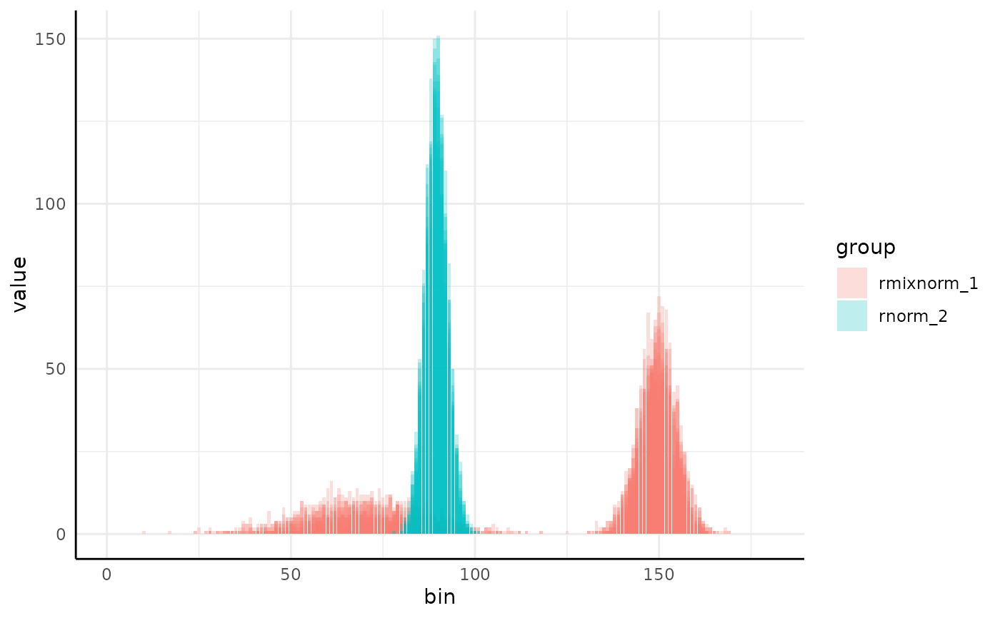
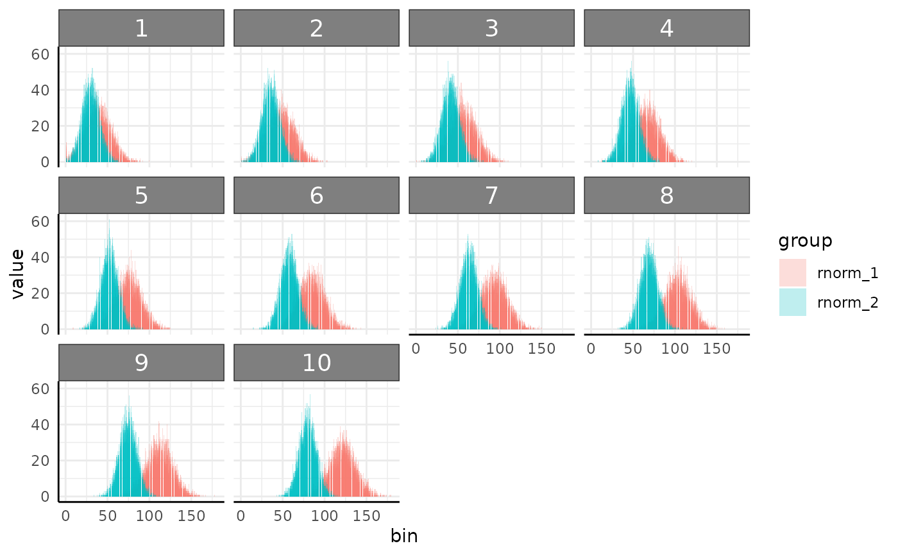

mvSim can be used to simulate data for example models/plots.
Arguments
- dists
A list of lists, with names corresponding to random deviate generating functions and arguments to the function in the list values (see examples). Note that the n argument does not need to be provided.
- n_samples
Number of samples per distribution to generate. Defaults to 10, can be >1L.
- counts
Number of counts per histogram, defaults to 1000.
- min_bin
The minimum bin number. This can be thought of as the minimum value that will be accepted in the distribution functions, with lower numbers being raised to this value. Note that bin arguments are both ignored in the case of "rbeta" and treated as 0,1.
- max_bin
The number of bins to return. Note that this is also the max value that will be accepted in the distribution functions, with higher numbers being shrunk to this value. Defaults to 180.
- wide
Boolean, should data be returned in wide format (the default)? If FALSE then long data is returned.
- binwidth
How wide should bins be? Defaults to 1.
- t
Number of timepoints to simulate. Defaults to NULL in which case data is simulated as non-longitudinal. Note that currently the first non
nargument of the data simulating function is assumed to be the parameter changing over time (ie, mean in rnorm, meanlog in rlnorm).- model
A type of growth model, passed to growthSim. This is only used if t is specified.
- params
Parameters for the growth model, passed to growthSim. This is also only used if t is specified. Note growth will start from the values specified in dists. See examples.
Examples
library(extraDistr) # for rmixnorm
#>
#> Attaching package: ‘extraDistr’
#> The following objects are masked from ‘package:brms’:
#>
#> ddirichlet, dfrechet, pfrechet, qfrechet, rdirichlet, rfrechet
library(ggplot2)
dists <- list(
rmixnorm = list(mean = c(70, 150), sd = c(15, 5), alpha = c(0.3, 0.7)),
rnorm = list(mean = 90, sd = 3)
)
x <- mvSim(dists = dists, wide = FALSE)
dim(x)
#> [1] 3600 4
x2 <- mvSim(dists = dists)
dim(x2)
#> [1] 20 181
ggplot(x, aes(
x = as.numeric(sub("sim_", "", variable)),
y = value, group = interaction(group, id), fill = group
)) +
geom_col(position = "identity", alpha = 0.25) +
pcv_theme() +
labs(x = "bin")

dists = list(rnorm = list(mean = 30, sd = 15), rnorm = list(mean = 25, sd = 10))
x3 <- mvSim(
dists = dists, wide = FALSE, # here we make longitudinal data
t = 10, model = "linear", params = list("A" = c(10, 5))
)
ggplot(x3, aes(
x = as.numeric(sub("sim_", "", variable)),
y = value, group = interaction(group, id), fill = group
)) +
facet_wrap(~times) +
geom_col(position = "identity", alpha = 0.25) +
pcv_theme() +
labs(x = "bin")
